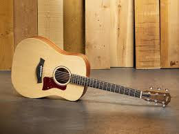

Hi! In this website I will talk about my flow. :)
My flow is something I can do and get so engrossed in, I lose track of time.
My biggest flow activity right now is playing guitar!

Here are my favorite songs to play:
- Shrike by Hozier
- Favor by Julien Baker
- Me and My Dog by Boygenius
Here's
where I learned to play shrike!
Here are some important skills to keep in mind while playing guitar:
- Keep your fingers arched to avoid pressing on the wrong strings
- Have good posture and keep the guitar facing outward instead of turning it to look
- Keep your thumb in the middle of the neck (this one is hard for me)